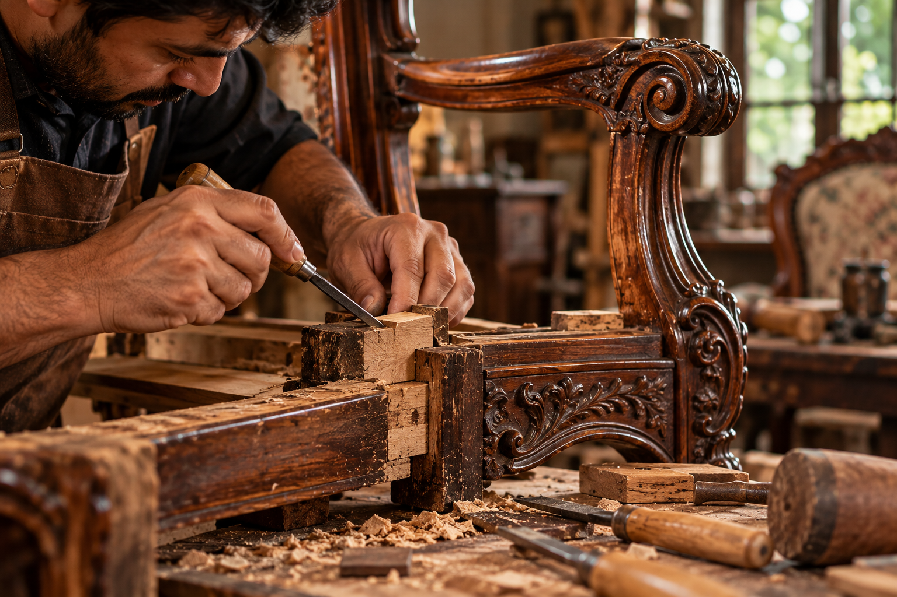
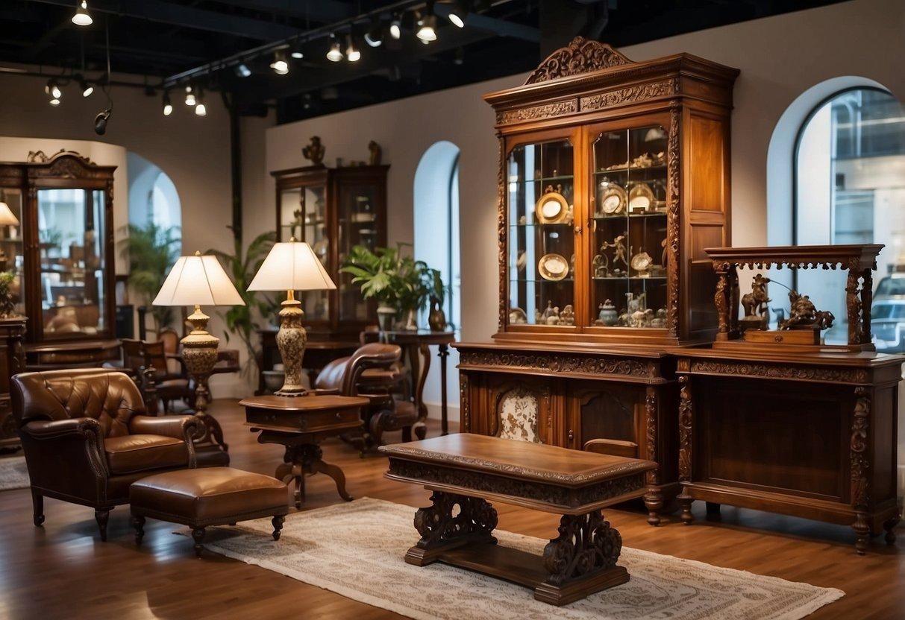
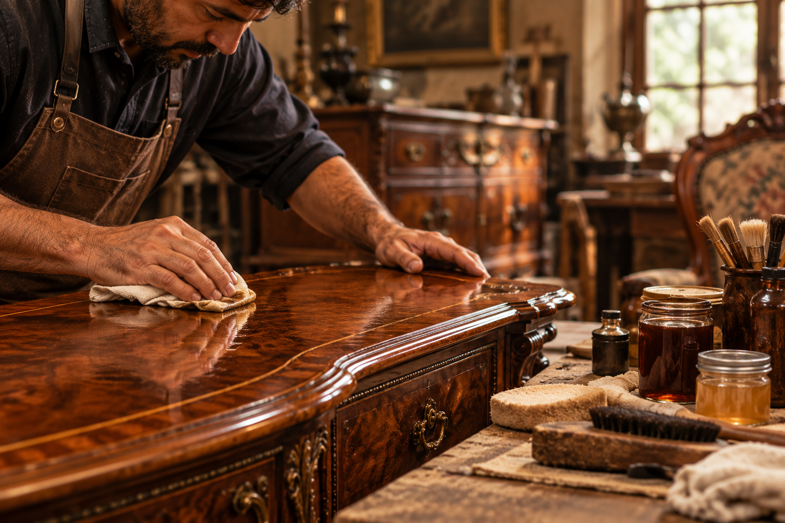
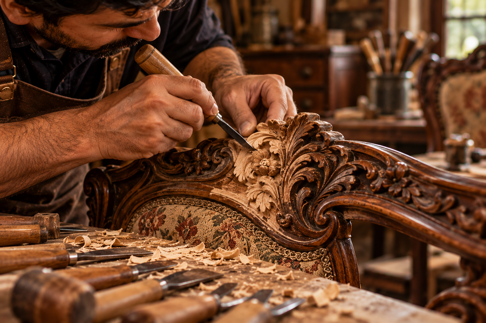
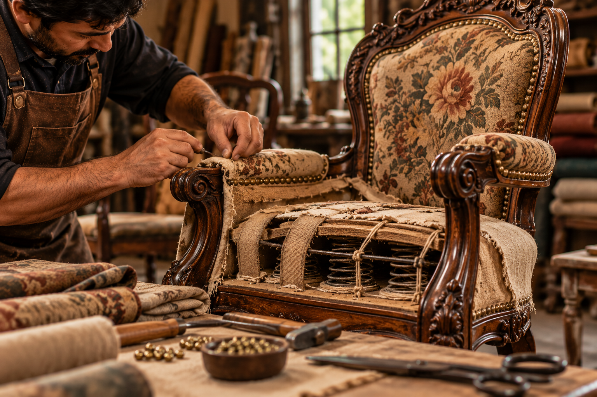
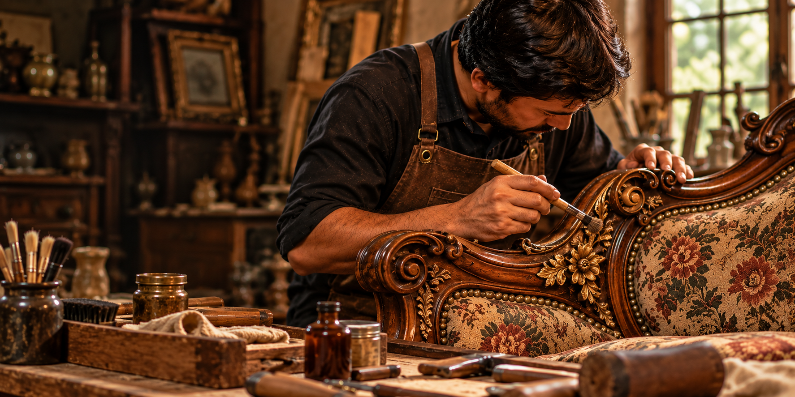

Structure & Stability
Wood Repair & Structural Care
We address loose joints, weakened frames, cracks, and damaged wooden components while respecting the original construction and character of each piece.
Explore MoreAntique & Vintage Furniture
Restoration Services
Preserving the character, craftsmanship, and history of extraordinary furniture for generations to come.
Our Restoration Philosophy
Every antique has a story worth protecting. Our thoughtful process respects its original character while helping it remain beautiful for years to come.

We examine the furniture's condition, materials, construction, and original details to understand what makes each piece unique.
We identify suitable restoration methods and prioritize preserving original finishes, character, and structural integrity.
Repair, refinishing, and detail work are carried out with care suited to the furniture and its individual restoration needs.
We review the completed work and share practical care recommendations to help preserve the piece for the future.
Our Specialist Services
From delicate surface refinishing to detailed structural repairs, every service is tailored to preserve the character and integrity of your treasured furniture.

Structure & Stability
We address loose joints, weakened frames, cracks, and damaged wooden components while respecting the original construction and character of each piece.
Explore More
Surface & Finish
Carefully selected finishing techniques refresh worn surfaces, enhance the natural beauty of wood, and help retain the distinctive appearance of antique furniture.
Explore More
Detail & Craftsmanship
Missing or damaged decorative details receive careful attention, with an emphasis on preserving the distinctive craftsmanship that gives each antique its identity.
Explore More
Comfort & Renewal
Where appropriate, worn upholstery can be renewed with considered fabric choices and careful finishing that complement the furniture's period, proportions, and original character.
Explore MoreFrom First Look to Final Detail
Restoring antique furniture requires patience, knowledge, and respect for the hands that originally created it. We approach every piece with a considered plan, choosing techniques that suit its age, materials, condition, and character.

Our Method
No two antiques are alike. Our process adapts to the needs of each piece, with careful attention at every stage.
We examine the materials, construction, condition, and distinctive details before recommending any work.
We identify suitable techniques and agree on the restoration priorities based on the piece's needs.
Repairs and finishing work are approached carefully, respecting the furniture's original character.
We review the completed work and share practical recommendations for ongoing furniture care.
The Vintage Era Promise
Antique furniture deserves more than a quick repair. It deserves informed decisions, honest guidance, and care that protects the character that makes it worth preserving.
We preserve the character, honour the craftsmanship, and let every piece tell its story.
OUR COMMITMENT TO EVERY ANTIQUEWe value the age, original details, and individual character that make every antique distinctive.
We approach restoration with patience and select methods suited to each piece's condition and materials.
We explain restoration options clearly, helping you make informed decisions about your treasured furniture.
We share practical care advice to help you maintain your furniture and enjoy it for years to come.
Give Your Antique a New Chapter
Let’s explore the right care for your treasured piece, with respect for its history and character.